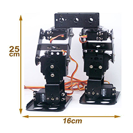
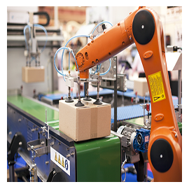
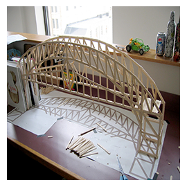

AcceleRobotics

Ethical Hacking
- 
Bi-ped Robotics
- 
IndustrialAutomation
Embededsystems
- 
Bridgedesign
This is an innovative workshop to hone your Microcontroller skills with one of the most interesting transducers available, the “Accelerometer”. These days the Accelerometer is almost everywhere: in your phones, gaming consoles, PDAs, music players, digital cameras and where not!! It also finds the most varied industrial usage in construction, vehicle collisions, health monitoring machinery, braking systems, navigation, image stabilization etc. Keeping this in mind, we have designed this workshop to train students on the concepts of AVR microcontrollers (Atmega8/32) and ADC and design advanced applications based on the Accelerometer. Students will learn to interface the Accelerometer with their Microcontrollers and get it to work in applications.
Workshop: 21Feb,2014
Fee: 500/- per head
Close
HackAdemy, Hyderabad is one of the esteemed IT firm specialized in providing penetration testing services for both website security and network security; also we provide training in the same area. We would like to conduct a workshop in your prestigious institution on "Ethical Hacking & Cyber Security". It will be open for all branches, people who have basic knowledge about internet and take interest in learning Cyber Security. Mainly it is intended for students at the undergraduate and post graduate levels. In this workshop students will learn the basics of Ethical hacking and Cyber Security. It will also take an in depth look at Hackers Practices. Students will be taught the ethics of cyber securities and how they can protect themselves against online
Workshop:21st and 22nd feb,2014
Fee: 800/- per head(with workshop kit)
Close
Android Hacking Malware Analysis The word biped means two legs. Bipedalism is a form of terrestrial locomotion where an organism moves by means of its two rear limbs, or legs. An animal or machine that usually moves in a bipedal manner is known as a biped.Team should comprise 5 members (Removing viruses without using Antivirus) * Machine as a biped * Workship on Biped-Robots
Vendor:RobogenesisWorkshop:21st and 22nd Feb,2013Fee:1300
Close
You can have a glance of how an automatic quality assurance system will work under stiff conditions. A semi industrial product for quality assurance through image processing and artificial intelligence, in which the machine will be able to detect defects in the object just byanalyzing the image of the object taken by camera and output of the software will signal the mechanism to perform necessary action. During the workshop students will get an exposure to: Programming Artificial intelligence Digital Image processing Robotics and intelligent systems automatic quality and control system Vendor: Jay Robotix Workhop: 21st and 22nd Feb,2014 Cost: 850/- per head
Close
@Programming the microcontroller using ARDUINO Interface .@ Interfacing and controlling various devices like LED, motors,sensors etc with microcontroller .@Use of ADC for different interface control .@Making of various types of robots their algorithms and coding .@Use of sound sensors and its applications The concepts to be covered are:- .@ Types of Autonomous Robots,elements of an autononomous robot .@ Microcontroller based robots .@ Pre programmed robots .@ Self learning robots MICRO-CONTROLLER: Overview of available microcontrollers The ATMEGA series of micro controller and its core
Vendor: Jay RobotixWorkshop:21st and 22nd Feb,2014Cost:1300 per person, 5 students can form a team(Kit and Software CD worth:4500)
Close
Analysis of structures in software followed by fabrication of bridge by individuals by balsa wood followed by competition. Finalists in competition will be selevted for zonal level compi in "IIT varanasi" . Certificate of participation and merit are awarded by "AEROTRIX-CIVIL SIMPLIFIED" in colobaration with iit and gitam university. Sustainability against the weights and forces. *prizes for winners.
date: 21st and 22nd feb,2014
reg.fee: 1050/- per person
Close